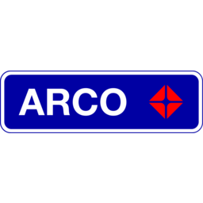
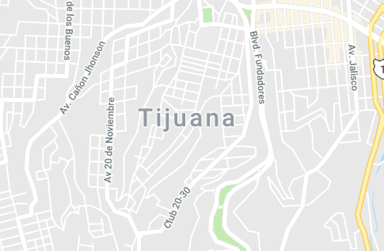

<ion-header>
    <ion-navbar color="secondary">
        <ion-title>Estación</ion-title>
    </ion-navbar>
</ion-header>

<ion-content>
    <ion-card>
        <ion-item>
            <ion-avatar item-start>
                
            </ion-avatar>
            <h2>Arco <small>#012</small></h2>
            <p>Calz del Tecnológico,Mesa de Otay, Tijuana, B.C.</p>
        </ion-item>

        <ion-item>
            <span item-left>Rating</span>
            <ion-icon name="star"></ion-icon>
            <ion-icon name="star"></ion-icon>
            <ion-icon name="star"></ion-icon>
            <ion-icon name="star"></ion-icon>
            <ion-icon name="star-half"></ion-icon>
            4.5
          </ion-item>
  </ion-card>


   

    <ion-card>
        <ion-item>
            <strong>Regular</strong> <ion-badge color="regular" item-end>$ 17.90</ion-badge>
        </ion-item>
        <ion-item>
            <strong>Premium</strong> <ion-badge color="premium" item-end>$ 18.90</ion-badge>
        </ion-item>
        <ion-item>
            <strong>Diesel</strong><ion-badge color="diesel" item-end>$ 20.90</ion-badge>
            
        </ion-item>
    </ion-card>

   


    

      <ion-card>

          <ion-item>
              <span item-left>
                <ion-icon name="timer" color="diesel"></ion-icon>  
                18 min</span>


              <span >
                <ion-icon name="pin" color="danger"></ion-icon>
                0.9 km</span>

              

            </ion-item>

          
          <ion-fab right bottom bottom>
            <button ion-fab (click)="goToMapa()">
              <ion-icon name="pin"></ion-icon>
            </button>
          </ion-fab>


      </ion-card>


</ion-content>
